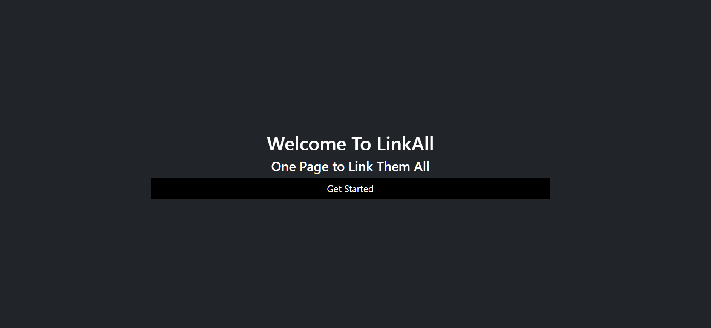

The purpose of this assignment is to help you learn the basic of web programming with Django and HTML/CSS/JS.
Django is a Python-based free and open-source web development framework. It follows the model–template–views architectural pattern, the specific of which will be explained to you as you follow this assignment. Django is used widely to create complex database-driven websites. The framework has a strong emphasis on code reusability and "pluggability" of components.
Django includes many built-in components that one would need to handle common web development tasks such as user authentication, content administration. With this, it allows for rapid development and is called the web framework for perfectionists with deadlines.
Python is used throughout the framework for everything from settings, creating data models, running server,... It is very easy to use Django as backend for scientific computing (i.e. machine learning model, data analysis) applications.
Well-known sites that use Django include Instagram, Bitbucket, and Clubhouse.
Lastly, Django may seem intimidating at first due to the amount of functionalities it offers. However, thanks to a very thorough documentation, it is very easy to learn.
While we have web frameworks such as Django to take care of the back-end operations such as creating, deleting data, we need something in the "front"-end to display such data.
The most basic front-end stack is consisted of HTML, CSS and JavaScript.
To put in very simple terms, we can look at each of the three components as below:
While the raw HTML/CSS/JS stack is powerful, to speed up development, in the real world, front-end developers rarely not use prebuilt frameworks. One popular framework is Bootstrap, a free open-source CSS framework that allows fast production of a responsive, mobile-friendly front-end.
We will dive into Bootstrap to power the front-end of the application you will be building in this assignment.
This is an individual assignment. Before you begin coding, do the following:
Unzip the project code into your working directory.
To run the project, you will need to have Python 3.8.10 (recommended) installed and create a virtual environment.
Use the command line, cd into your working directory and run the command: python3 -m venv
myenv
Once the virtual environment is created, you can activate it by running the command:
myenv\Scripts\activate
source myenv/bin/activate
Once the virtual environment is activated, you can install all dependencies by running:
pip install -r requirements.txt
To run the starter code, change directory into link_all and run command:
python manage.py runserver
A server should be running on your machine at http://127.0.0.1:8000/
On the index page, you should see a list of URLs. The application is not yet functional.
link_all contains 2 apps, manage_links and
manage_users.
templates folder.static folder.db.sqlite3 file.The current application is incomplete and is buggy! Your task is to debug the application and implement certain functions to make application... functional.
Make sure to be logged in with your account before you start coding.
To create a table, which define your database layout, you will be editing the models.py file
in
each app's directory.
A model is a single and definitive source of information about your data. It contains fields
(columns in database table) and behaviors (i.e. constraints of the data such as length, values,...) of
the data you want to store. Your models can reside in any file anywhere, but for simplicity and
efficiency,
the Django convention is to store all models of an app in its models.py file.
In manage_links, we have provided you with an example model (not complete) for you to start
out.
# Link model
class Link(models.Model):
url = models.URLField()
title = models.CharField()
user = models.ForeignKey(User, on_delete=models.CASCADE)
def __str__(self):
"""Returns a string representation of the model."""
return self.title
Each model is represented by a class that subclasses or extends django.db.models.Model and
has
a number of
class variables which represent database fields.
Each field is a Field class. Above, we have CharField for character fields and URLField for
URL. This
specifies the datatype each field holds.
The field's name is going to be used as your database column names.
Certain Field classes have required arguments. For example, CharField requires a
max_length
that is missing from the provided code, and you should add. A Field can also have various optional
arguments
such as default values.
Finally, to specify relationships between database tables, we use one of the three keywords
ForeignKey (for Many to One), ManyToManyField and OneToOneField.
For example, in the provided code, we want multiple (many) links to relate to one User, so we specify
the
user field to be the key linking Link and User.
on_delete=models.CASCADE lets the application know when an User is deleted, also delete the
Link related to the User.
In this task, you will be filling in the fields in Link and also finishing the rest of the
database in manage_links and manage_users by implementing the models as
described
below:
manage_linksUser; on User-delete, delete related
Link
manage_linksfacebook, instagram, youtube, twitter, spotify, reddit
User; on User-delete, delete related
SocialMedia
manage_userspfp inside folder
media
bgp inside folder
media
To accomplish this task, refer to these resources:
When you are satisfied with your implementation, you can apply the changes to your application database by running the following commands:
python manage.py makemigrations manage_links manage_users
python manage.py migrate
If everything is correct, you should see the following message in the terminal:
Migrations for 'manage_links':
manage_links/migrations/0001_initial.py
- Create model SocialMedia
- Create model Link
Migrations for 'manage_users':
manage_users/migrations/0001_initial.py
- Create model Profile
Make sure this step is complete before proceeding to the next task.
Now that you have created a Profile model associated with each user, it would be a good idea to investigate how to create a profile.
There are a few ways to approach this problem such as manually using the Django Admin Console or using a form. However, in a real application, a profile would be created automatically after a user is registered.
Django provides an elegant way of doing this using a built-in tool called signals. To put
very
simply, signals allow certain senders to notify certain receivers that some
action has taken place.
signals is an essential part of the Django framework and is used widely to perform actions
on
modification/creation of a particular entry in database or to validate data.
There are a few concepts to note when using signals:
Generally, all signals used in an app is placed in a file signals.py in the app's
directory.
There are two tasks you need to complete for this section:
signals.py file that is
responsible for creating a Profile. You will have to copy the code provided below into the file.
from django.contrib.auth.models import User
from django.dispatch import receiver
from .models import Profile
###
@receiver(###Signals type###, sender=###)
def create_user_profile(sender, instance, created, **kwargs):
# instance is a reference to user being registered
if created:
Profile.objects.create(###)
@receiver(###Signals type###, sender=###)
def save_user_profile(sender, instance, **kwargs):
instance.profile.save()
And finding out what you should be filling into the missing part (###) of the code to satisfy the
desired
behaviors listed below:
Profile is created after a user is registered. Profile is created with default display_name being the user's
username;
default bio being "Hello, my name is display_name."
[Model Name].objects.create([Field
Name]=value)
signals by creating a
signal in the manage_links app.
After finishing both tasks, you can try creating an account and you should see your profile similar to follow: [Add photo]
It would be helpful to provide users with a way to add or remove links from their profile.
To configure the backend of this functionality, we employ views which is one of the cores of
Django.
A view is either a function or a class which takes a request and returns a response.
Function-based and class-based views have their own pros and cons. In our case, class-based view is a more efficient choice because it allows you to reuse code.
You can reason this by looking at the structures of Link and SocialMedia. They
are
similar so it makes sense that it will be very similar to create, edit and remove entries of this type
from
the database. However, class-based view is helpful to make create, edit and remove operations easy in
general, given that no complicated data validation or manipulation is needed.
In manage_links/views.py, we have provided you with a "mixin", ManageLinksMixin, which
contain
methods that the create, edit and remove operations of Link and SocialMedia
share.
In object-oriented programming languages, a mixin is a class which contains a combination of methods
from
other classes.
Your task is to complete the functions inside this mixin and use the mixin to complete the rest of the
views.py as described below.
context dictionary.form_valid function is implemented for you.In general, these views are very similar and short (which isn't always the case)! That is thanks to
ManageLinksMixin we don't have to repeat more code than necessary.
ManageLinksMixin.To see your views in action, you have to connect them to their respective URLs.
In Django, you can configure and organize your URLs however you want. However, it is good practice to organize them by app.
As you can see, each app manage_links and manage_users has its own
urls.py file.
In manage_links/urls.py the configuration for LinkCreateView and
LinkUpdateView are already created for you. Your task is to follow the same structure
and add in the configurations for the rest of the views.
Note: pk stands for "Primary Key" which we have to supply the URL with for
the
application to know which item it is editing or deleting. You can see how it is used in function
get_object at the end of the mixin.
In general, you can pass any and as many arguments as you need in a URL.
After successfully completing Task 4, our website is mostly functional!
You will notice that there are no users on the website besides the ones you may have created so far to debug the last tasks.
We will now populate the database with a script. To make sure there's no conflict, flush the
database
before continuing: python manage.py flush
From your project folder, run the command python populate.py to populate the
database
with some "sample users". Finally, make an account for yourself and add some links and social
media
unique to you.
Expectedly, each user has profile page. If you look in the manage_users/urls.py
file,
you will find that the URL for the profile page has the configuration:
profile/<username>/.
Visist URL <your local host>/profile/sample_user_1/ you should see a user
profile
page but with your information!
Visiting any other profile will still show your info and this is not our desired behavior.
Your first task is to investigate and debug the view associated with this URL configuration.
Second, you also want to display the links and social medias you have added earlier.
python manage.py flush in the
terminal.
ManageLinksMixin works properly by looking at
LinkCreateView's behavior.
In this part, we will complete the front-end of the application.
Being a web framework, Django requires way to generate webpage dynamically. The simplest approach uses the template system. A template file contains the static parts of the desired output as well as Python-like syntax that determines when and where content would be inserted.
The syntax is made possible by the Django Template Engine/Language. Each template recieves a
context object which is a dictionary of data that would be render in the template.
In this assignment, we will not dive into these syntaxes. This part of the template files is already completed for you.
Before jumping into the tasks, let's take a quick look at where we store our templates.
There are many ways to organize template files. In this project, we place all template files into one folder
templates at the same level at the apps.
The folder has the following content and structure:
templates/ -- contains all template files
index.html -- project-wide index page
commons/ -- template(s) used by multiple apps
form_commons.html -- common template for login/registration/add/update Link and SocialMedia
components/ -- HTML snippets separated for modularity
edit_bar.html -- buttons for updating Profile
nav_bar.html -- navigation bar
manage_links/ -- template(s) for manage_links app
link_form.html -- template used for add/update Link and SocialMedia
manage_users/ -- template(s) for manage_users app
profile_detail.html -- template for displaying user profile
profile_update.html -- template for updating user profile
Note that there are more files and subfolders not listed that you don't need to concern.
In Part 2 of the assignment, you will be looking at mainly index.html,
nav_bar.html and profile_detail.html.
Currently, the index page is quite messy, displaying all current URL configurations in the project. Ideally,
we want something more attractive-- a landing page. To get introduced to Bootstrap, you will be implementing
a simple landing page with Bootstrap 5 using instructions inside the index.html file.
If you follow the instructions, your landing page should look similar to this:

You are free to play around with the Bootstrap framework to make it look more appealing.
Now let's add a navigation bar to make moving around the website easier.
Bootstrap provides you with a simple way to make this possible.
Reference the documentation here.
Place your nav bar code in nav_bar.html.
You are welcome to make the nav bar as complex or simple as you wish. However, it has to meet the following requirements:
The logic needed for the 2 latter requirements is implemented for you.
Lastly, we should finish by updating the Profile Page
There are three main parts you need to address: the display name, the social media buttons, and the URLs.
You have the freedom to display each part how you want. However, in general, here are two suggestions for a simple solution:
You are welcome to be creative and play around with other parts of the page.
Submit a zip file (compression) of your link_all folder.
Your back-end will be graded with an autograder. You will recieve full marks if the autograder passes. Otherwise, points will be deducted on a case to case basis after manual review. Part 1 is worth 12 points.
Your front-end will be graded mannually. Your layout should be well formatted i.e. no unintended out of center elements. Buttons and nav bar should be working as specified. Points will be deducted on a case to case basis. Part 2 is worth 8 points.